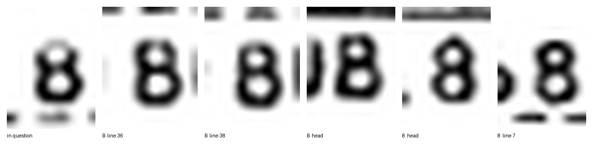
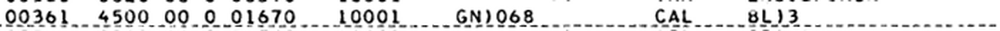
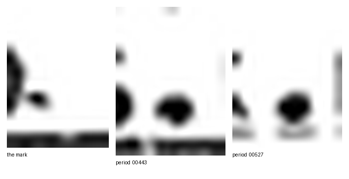
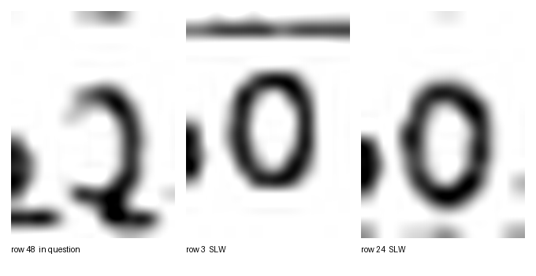

Reading a page
that cannot answer
Every fact in this reconstruction comes from ink on a photographed page. Two manuals, 345 scans at 150 dots to the inch, and no way to ask anyone what a smudge was meant to be.
This is what it takes to turn one of those pages into text you can trust. Start with the part that goes wrong.
Which of these is a B?
Six crops, all from one page of a compiled program listing, all printed by
the same machine on the same day. The one on the left is the character
under question. The other five are characters we are certain of —
three of them are B, two of them are 8.

B from two
lines of the body, B from the page head, 8 from
the page head, 8 from the label GN)068.
If you cannot tell, that is the correct answer. On this printer, at this
resolution, after sixty-odd years and one photograph, B and
8 are the same double-loop blob.
It matters because the character is the first letter of a name in a
compiled program, and the line reads either BL)3 or
8L)3.

What the measurements said
Cross-correlating the doubtful glyph against every certain one on the page
scores it 0.82 to 0.87 against the 8s and 0.62 to 0.85 against
the Bs. That looks like an answer until you run the same test
between the characters we already know: a certain B scores 0.76
to 0.89 against the certain 8s. The ranges overlap. The test
cannot separate the two even when it is told the answer, so it carries no
information about the one we are asking. Two more tests — the
straightness of the left edge, the balance of ink between the halves
— fail the same way.
So the ink does not decide it, and no amount of staring will change that.
It was decided on something else: every other name prefix on the page is
either all letters or a single digit, never a digit and a letter mixed. On
that reasoning it reads BL)3 — and it is recorded as
provisional, with the reason written down, because the reason was not the
ink.
One reader, and nothing else
Pages are read by a reader who is given the scan and forbidden everything else — no transcription, no design note, no test fixture, not even another page of the same listing. Several files in the repository state, in words, the very numbers the reading is supposed to establish independently. One glance at any of them and the measurement stops being evidence and starts being an echo.
Three pages, three readers, no shared context. Each writes down what it measured, what it judged, and what it could not read at all.
The page is not straight, and the grid is not given
A photographed page arrives tilted. Page 202 of the 1962 manual leans 0.935 of a degree, found by rotating the image until the horizontal ink profile is at its sharpest — when the lines are level, the ink stacks into peaks.
Then the character grid has to be recovered from the ink itself, because every field on this listing is defined by which column it starts in. On page 202 the characters sit 9.26708 pixels apart, with the first column centred at 438.290 pixels, fitted across 2,006 character edges for an error of under half a pixel.
Both numbers belong to that page and no other. Two neighbouring pages have differed by 25 pixels in where they sit on the paper, so a grid carried over from the page before is simply wrong. And it has to be fitted across the widest span the page offers: an error of 0.06 of a pixel per column — far too small to see — has drifted half a character wide by column 89.
The page checks itself
Occasionally the listing prints the same machine word twice on one line, once as data and once as the instruction's operand. Those two printings have to agree digit for digit, which turns one line into a test of the whole reading. It doubles as the longest ruler on the page: on page 202 the two printings stand 621 pixels and exactly 67 characters apart, giving 9.269 pixels per character — the same figure the fit found on its own, arrived at a different way.
The addresses give another check. They should run continuously in base eight down the page, so a misread digit usually breaks the sequence and announces itself.
Is that a full stop, or a speck of dirt?
Here is a mark beside a digit, with two certain full stops from the same page for comparison.

It was ruled not a character at all, and the reasoning is the nicest thing on this page. A printer cannot print between columns. Every full stop measured on that page sits within 0.07 of a whole column — 59.018, 39.049, 43.070, 62.989. This mark sits at column 29.63, about a third of a character adrift of anywhere a character could be. It is also too small and too pale: two rows tall where the real ones are four or five, and never reaching true black.
So it is a flick of ink or a speck on the copy, and it is left out of the transcription with the measurement recorded in case anyone later disagrees.
Sometimes the reader is simply wrong

The reader of page 202 first read this as a 2, making the
machine word 0622. It is a 0, making the word
0602. What caught it was stroke shape at high magnification:
through its middle the character carries ink only in a straight vertical
on the right, while every certain 2 on the same line drifts
diagonally leftward there, and every certain 3 pinches inward.
That correction is in the record, phrased by the reader as “this one I first read wrong”. A method that never catches itself is not being tested.
What happens to a doubt
Nothing doubtful is settled quietly. It is cut out of the scan, enlarged, set beside characters we are sure of, and written up with the measurements and an argument for each way it could go. Jack rules on it, the ruling is recorded with its reason, and if the reason was not the ink then the record says that too.
Three of the four questions on the pages above were settled that way. The
fourth — the B — is still provisional, and will
stay provisional until something other than this one photograph turns up.
Why bother to this degree
Because a compiler built on a misread column produces output that is wrong in a way nobody can see. Two corrections to this project came only from measuring a scan, after the transcription had already been read by eye and believed. Every claim about a card column in this reconstruction is measured from ink, and never taken from how a transcription happens to be indented.
The rulings above, and the per-page verification record, live in the object-listing notes. The crops on this page are the ones the reviewer actually saw. Go and compile something.